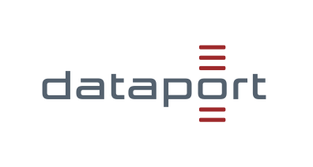

Stand: 09.04.2026
Liebe Besucher*innen, liebe Nutzer*innen, liebe Erziehungsberechtigte,
diese Datenschutzhinweise informieren über die Verarbeitung personenbezogener Daten, die beim Aufruf der Website erwin.dBildungscloud.de von jeder oder jedem Besucher*in automatisch durch Dataport erhoben werden (Buchstabe A) sowie über die Verarbeitung von Daten, die im Auftrag der teilnehmenden Schulen bei Nutzung des ErWIn Portals erhoben werden (Buchstabe B).
Das ErWIn Portal schafft die technische Grundlage dafür, dass Lehrende und Schüler*innen in jedem Unterrichtsfach moderne digitale Lehr- und Lerninhalte nutzen können.
Personenbezogene Daten sind Informationen, die sich auf eine identifizierte oder identifizierbare Person beziehen. Hierunter fallen vor allem Angaben, die Rückschlüsse auf die Identität ermöglichen, beispielsweise Name, Telefonnummer, Anschrift oder E-Mail-Adresse. Statistische Daten, die beispielsweise bei einem Besuch der Website erhoben werden und die nicht mit einer Person in Verbindung gebracht werden können, fallen nicht unter den Begriff des personenbezogenen Datums.
Bei jedem Aufruf der Website erwin.dBildungscloud.de werden durch den Browser automatisch Zugriffsdaten übermittelt, um den Besuch der Website zu ermöglichen. Die Zugriffsdaten umfassen insbesondere die IP-Adresse des anfragenden Geräts, das Datum und die Uhrzeit der Anfrage, die Adresse der aufgerufenen Website und der anfragenden Website sowie Angaben über den verwendeten Browser und das Betriebssystem. Die Verarbeitung dieser Zugriffsdaten ist erforderlich, um den Besuch der Website zu ermöglichen und die dauerhafte Funktionsfähigkeit und Sicherheit der Systeme von Dataport zu gewährleisten. Diese Zugriffsdaten werden für 14 Tage gespeichert und nach anschließender Anonymisierung archiviert.
Die Website nutzt zudem eigene Cookies, d. h. kleine Dateien, die auf den Geräten der Besucher*innen gespeichert werden und Informationen für den Austausch mit den Systemen von Dataport enthalten. Die meisten Browser sind standardmäßig so eingestellt, dass sie Cookies akzeptieren. Besucher*innen können jedoch ihre Browsereinstellungen so anpassen, dass Cookies abgelehnt oder nur nach vorheriger Zustimmung gespeichert werden. Ohne Cookies können jedoch ggf. nicht alle Angebote und Funktionen der Website störungsfrei funktionieren. Die auf der Website eingesetzten Cookies dienen insbesondere zur Login- Authentifizierung, zur Lastverteilung und um zu vermerken, dass auf der Website platzierte Informationen angezeigt wurden, sodass diese beim nächsten Besuch der Website nicht erneut angezeigt werden müssen. Wir wollen dadurch eine komfortablere und individuellere Nutzung der Website ermöglichen.
Beim Aufruf der Website durch nicht-angemeldete Besucher*innen ist Dataport, Niederlassung Potsdam, Joseph-von-Sternberg-Str. 1 b, 14482 Potsdam, datenschutz@dbildungscloud.de für die zuvor genannten Verarbeitungsvorgänge verantwortlich. Für alle Fragen zum Thema Datenschutz ist unter dataportdatenschutzbeauftragter@dataport.de die Datenschutzbeauftragte von Dataport erreichbar. Weitere Verantwortlichkeit zur Datenverarbeitung und weiterführende Informationen finden Sie unter datenschutz. Rechtsgrundlage für die Verarbeitung sind die zuvor genannten berechtigten Interessen von Dataport.
Bei angemeldeten Nutzer*innen findet die zuvor genannte Datenverarbeitung unter der nachfolgend beschriebenen datenschutzrechtlichen Verantwortlichkeit der Schulen statt, die Dataport als technischen Dienstleister beauftragen.
Bei Nutzung des ErWIn Portals ist Ansprechpartner und verantwortliche Stelle für die Verarbeitung personenbezogener Daten nach der EU- Datenschutzgrundverordnung (DSGVO) die Schulleitung der jeweiligen Schule, die du besuchst / Ihr Kind besucht.
Für Fragen zum Thema Datenschutz im Zusammenhang mit dem ErWIn Portal durch die Schule kannst du / können Sie sich jederzeit auch an den Datenschutzbeauftragten der Schule wenden.
Bei der Nutzung des ErWIn Portals werden Daten grundsätzlich auf Basis deiner / Ihrer Einwilligung erhoben. Vor diesem Hintergrund setzt das ErWIn Portal ein Einwilligungskonzept um. Voraussetzungen für eine datenschutzkonforme Einwilligung ist stets die Freiwilligkeit der Einwilligungserteilung. Die Schulen gewährleisten diese Freiwilligkeit, indem sie den Schüler*innen bei Nichterteilung/Widerruf der Einwilligung die Teilnahme am Unterricht auch ohne ErWIn Portal ermöglichen, z. B. indem auf herkömmliche Unterrichtsmittel zurückgegriffen wird. Es besteht grundsätzlich keine Verpflichtung zur Nutzung des ErWIn Portals (soweit nicht in den Schulgesetzen ausnahmsweise etwas anderes vorgesehen ist). Die Einwilligung kann jederzeit von dir / Ihnen widerrufen werden. Durch einen Widerruf wird die Rechtmäßigkeit der aufgrund der Einwilligung bis zum Widerruf erfolgten Verarbeitung nicht berührt. Im Fall des Widerrufs löschen wir die auf Basis der Einwilligung gespeicherten personenbezogenen Daten unverzüglich, es sei denn, es besteht ein gesetzlicher Grund zur Aufbewahrung oder du willst / Sie wollen vorher noch auf die gespeicherten Daten zugreifen.
Bei Schüler*innen unter 16 Jahren muss die Einwilligung durch einen erziehungsberechtigten Elternteil abgegeben werden. Nach Vollendung des 16. Lebensjahrs wird der oder die Schüler*in dann nach der eigenen Einwilligung gefragt.
Die Registrierung erfolgt grundsätzlich in elektronischer Form auf der Website erwin.dBildungscloud.de. Die Erhebung personenbezogener Daten ist auf ein notwendiges Minimum beschränkt. Zur Registrierung in dem ErWIn Portal sind folgende Angaben erforderlich:
Diese Angaben werden gespeichert, damit Nutzer*innen mit ihrer E-Mail-Adresse und dem selbst gewählten Passwort Zugriff auf das ErWIn Portal erhalten.
Darüber hinaus werden bei der Nutzung des ErWIn Portals folgende Daten erfasst:
Die Verarbeitung der Daten in dem ErWIn Portal erfolgt, um die Nutzung des ErWIn Portals als IDM- Plattform zu ermöglichen, einschließlich der Schaffung von Schnittstellen zu Schulportalen, webbasierten Diensten und Inhalten.
Im Einzelnen werden die Daten zu folgenden Zwecken verarbeitet:
Bereitstellung von Kollaborations-Tools (Chat- und Webkonferenzfunktion, Team-Arbeit innerhalb der Schule sowie mit anderen Schulen und/oder externen Expert*innen). Das ErWIn Portal dient der Vermittlung und Verwaltung von Lerninhalten sowie der Unterstützung des Bildungs- und Erziehungsauftrags der Schulen. Das ErWIn Portal dient ausdrücklich nicht der schulinternen Verwaltung von Daten der Schüler, Lehrkräften oder Eltern für andere Zwecke, insbesondere nicht für Aufgaben der Schulverwaltung bzw. Personalverwaltung der Schule. In dem ErWIn Portal sind daher insbesondere keine Funktionen zur Notenerfassung, Schülerbewertung oder Anwesenheitskontrolle vorgesehen. Das ErWIn Portal stellt auch kein digitales Klassenbuch dar.
Über den Hilfebereich des ErWIn Portals (symbolisiert durch das Fragezeichen) hast du / haben Sie die Möglichkeit, über ein Kontaktformular mit dem User-Support in Kontakt zu treten. In den vorgegebenen Feldern hast du / haben Sie die Möglichkeit, das Problem, den Ist- und Sollzustand zu beschreiben und eine von mehreren vorgegebenen Kategorien zu wählen. Zusätzlich wird eine Nutzerkennung übertragen, damit eine Zuordnung zu deinem / Ihrem Konto möglich ist. Dem User- Support werden auch der in deinem / Ihrem Nutzerkonto hinterlegte Vor- und Nachname angezeigt, jedoch keine darüberhinausgehenden personenbezogenen Daten. Der User-Support wird versuchen, das Problem zu lösen. Die Antwort auf deine / Ihre Supportanfrage wird systemseitig an die im Nutzerkonto hinterlegte E-Mail-Adresse versendet.
Die bei der Verwendung des Kontaktformulars erhobenen Daten werden nach vollständiger Bearbeitung deiner / Ihrer Anfrage automatisch gelöscht, es sei denn, deine / Ihre Anfrage wird noch zur Erfüllung vertraglicher oder gesetzlicher Pflichten benötigt (vgl. Abschnitt "Speicherdauer").
Die bei der Nutzung des ErWIn Portals anfallenden personenbezogenen Daten werden ausschließlich innerhalb der Europäischen Union verarbeitet.
Die erfassten Daten werden an Dataport als Dienstleister der Schulen übermittelt. Dataport ist durch einen Vertrag nach Art. 28 DSGVO zur weisungsgebundenen Verarbeitung im Auftrag der teilnehmenden Schulen verpflichtet. Sofern Daten durch Dataport an weitere Dienstleister weitergeben werden, dürfen diese die Daten ausschließlich zur Erfüllung ihrer Aufgaben verwenden. Die Dienstleister werden sorgfältig ausgewählt und beauftragt, sodass es zu keiner Schwächung des Datenschutzes kommt. Sie sind vertraglich an Weisungen gebunden, verfügen über geeignete technische und organisatorische Maßnahmen zum Schutz der Rechte der betroffenen Personen.
Aus technischen oder organisatorischen Gründen behält sich Dataport vor, Hosting-Dienstleistungen an Subunternehmer zu vergeben, um ein reibungsloses Hosting sicherzustellen. Folgende Subunternehmer werden derzeit durch Dataport zum Hosting eingesetzt, beispielsweise für die Ablage von hochgeladenen Nutzerdaten, Backups:
Um den reibungslosen Versand von Transaktionsmails (Registrierung, Pin-Bestätigung, Passwort vergessen etc.) auch zu Zeiten mit hohem Mailaufkommen zu gewährleisten, z.B. am Schuljahresanfang, wird folgender Dienstleister für den Transaktionsmailversand beauftragt:
Darüber hinaus gibt deine / Ihre Schule und Dataport keine personenbezogenen Daten an Dritte weiter, es sei denn, die Weitergabe erfolgt in Erfüllung einer gesetzlichen Verpflichtung (z. B. im Rahmen von strafrechtlichen Ermittlungen).
Grundsätzlich werden personenbezogene Daten im ErWIn Portal nur solange gespeichert, wie zur Verfolgung der Zwecke erforderlich, zu denen die Daten erhoben wurden. Danach werden die Daten unverzüglich gelöscht, es sei denn, die Daten werden noch wegen gesetzlicher Aufbewahrungspflichten benötigt.
Dataport berichtigt, löscht oder schränkt die Verarbeitung der vertragsgegenständlichen Daten nur nach dokumentierter Weisung der jeweils verantwortlichen Schule ein. Die Löschung von Daten auf eine Anfrage des Betroffenen hin erfolgt ebenfalls nur in Abstimmung mit den verantwortlichen Schulen. Während der Laufzeit der vertraglichen Vereinbarungen zwischen der jeweiligen Schule und Dataport haben die Nutzer*innen zudem jederzeit die Möglichkeit, auf die von ihnen in dem ErWIn Portal gespeicherten Dateien und Ordner zuzugreifen und diese zu löschen. Die Löschung von Schüler- Accounts ist durch die Schul- Administrator*innen möglich.
Dataport verpflichtet sich im Auftragsverarbeitungsvertrag gegenüber den Schulen, die Daten noch 90 Tage nach Beendigung des Auftragsverarbeitungsvertrags mit den Schulen aufzubewahren, damit die Nutzer*innen des ErWIn Portals ihre Daten herunterladen können. Nach Ablauf der 90-tägigen Aufbewahrungsfirst wird Dataport alle Nutzerkonten der Auftraggeberin sperren und alle personenbezogenen Daten innerhalb von weiteren 90 Tagen löschen oder zurückgeben, sofern der Löschung dieser Daten keine gesetzlichen Aufbewahrungspflichten des Auftragsverarbeiters oder sonstige Rechtsgründe entgegenstehen. Die datenschutzgerechte Löschung ist zu dokumentieren und gegenüber dem Verantwortlichen auf Anforderung zu bestätigen.
Registrierte Nutzer*innen des ErWIn Portals wenden sich zur Wahrnehmung ihrer Rechte bitte an die jeweils verantwortliche Schule. Im übrigen richten Besucher*innen der Website ihre Anfrage bitte an Dataport unter den eingangs genannten Kontaktdaten.
Dir / Ihnen steht jederzeit das Recht auf Auskunft über die Verarbeitung deiner / Ihrer personenbezogenen Daten zu. Falls Daten falsch oder nicht mehr aktuell sein sollten, hast du / haben Sie das Recht, diese Daten berichtigen zu lassen. Du kannst / Sie können außerdem die Löschung deiner / Ihrer Daten verlangen. Sollte die Löschung aufgrund von Rechtsvorschriften ausnahmsweise nicht möglich sein, werden die Daten gesperrt, so dass sie nur noch für diesen gesetzlichen Zweck verfügbar sind. Du kannst / Sie können die Verarbeitung deiner / Ihrer personenbezogenen Daten außerdem einschränken lassen, wenn z. B. die Richtigkeit der Daten angezweifelt wird. Dir / Ihnen steht auch das Recht auf Datenübertragbarkeit zu, d. h., du erhältst / Sie erhalten auf Wunsch eine digitale Kopie der von dir / Ihnen bereitgestellten personenbezogenen Daten.
Du hast / Sie haben das Recht, eine einmal erteilte Einwilligung jederzeit zu widerrufen. Dies hat zur Folge, dass die Datenverarbeitung, die auf dieser Einwilligung beruhte, für die Zukunft nicht mehr fortgeführt wird. Durch den Widerruf der Einwilligung wird die Rechtmäßigkeit der aufgrund der Einwilligung bis zum Widerruf erfolgten Verarbeitung nicht berührt. Soweit deine / Ihre Daten zur Wahrung berechtigter Interessen oder zur Wahrnehmung einer Aufgabe, die im öffentlichen Interesse liegt oder in Ausübung öffentlicher Gewalt erfolgt, verarbeitet werden, hast du / haben Sie das Recht, jederzeit Widerspruch gegen die Verarbeitung deiner / Ihrer Daten einzulegen aus Gründen, die sich aus deiner / Ihrer besonderen Situation ergeben.
Du hast / Sie haben schließlich das Recht der Beschwerde bei der jeweils zuständigen Datenschutzaufsichtsbehörde. Du kannst / Sie können dieses Recht bei einer Aufsichtsbehörde in dem Mitgliedstaat deines / Ihres Aufenthaltsorts, deines / Ihres Arbeitsplatzes oder des Orts des mutmaßlichen Verstoßes geltend machen.
Dataport unterhält aktuelle technische und organisatorische Maßnahmen zur Gewährleistung der Datensicherheit, insbesondere zum Schutz personenbezogener Daten vor Gefahren bei Datenübertragungen sowie vor Kenntniserlangung durch Dritte. Diese werden dem aktuellen Stand der Technik entsprechend jeweils angepasst. Auf der Website eingegebene Daten werden verschlüsselt übertragen (Transport Layer Security).
Gelegentlich werden diese Datenschutzhinweise aktualisiert, beispielsweise wenn sich die Funktionalitäten in dem ErWIn Portal ändern oder sich die gesetzlichen oder behördlichen Vorgaben ändern.